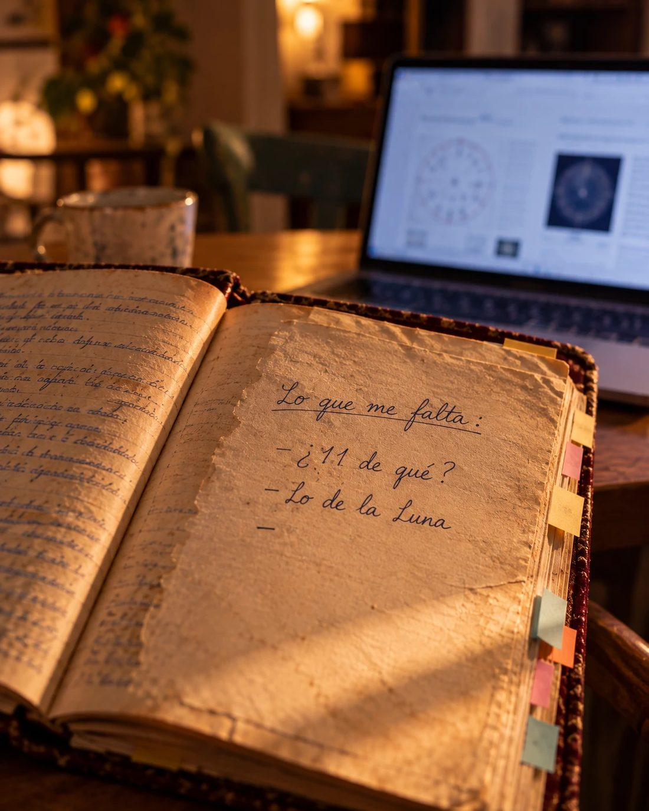

· I ·
El correo llegó a las doce con siete.
"✦ Tu Mapa de Identidad está listo Daniela ✦", dos PDF y una imagen: "Tu sello de identidad".
Abrió primero el sello, porque era una imagen y ya era medianoche. Era un símbolo redondo, dorado, con una media luna en el centro. Lo vio un rato. Luego lo puso de fondo de pantalla en el celular.
Después abrió el PDF.
En la portada estaba su nombre completo, la Ciudad de México, el 6 de julio de 1994, las 17:20. Y abajo, en letras grandes:
La Navegante Reflexiva
—¿Navegante? —dijo en voz alta.
Ella se mareaba hasta en los columpios.
Pero siguió.
Eres alguien que vive en el movimiento entre dos mundos.
Daniela miró alrededor. Un sillón mostaza que no era suyo. Dos maletas que no había abierto. Un cuaderno de otra mujer en el piso.
Bueno. Eso sí.
· II ·
La siguiente página decía: Cáncer · Ascendente Sagitario.
Así que ese era su ascendente.
Cáncer quiere quedarse en la cueva emocional; Sagitario quiere salir corriendo hacia la siguiente montaña.
Daniela volteó a ver las cajas cerradas junto al sillón. Luego la puerta.
—Pues sí —le dijo a la pantalla—. Las dos. Todo el tiempo.
Había una lista de fortalezas. Empatía profunda. Intuición poderosa. Lealtad feroz. Leyó tres y se saltó las demás; ya habría tiempo de sentirse halagada.
Más abajo, en un recuadro de otro color, decía "La sombra que pide conciencia".
Abres y cierras, acercas y alejas, confundes a quien intenta amarte.
Eso no lo subrayó. Pero lo leyó dos veces.
· III ·
Lo demás lo fue leyendo a saltos.
Perro de Madera, Yang. "Madera —dijo—. Por fin." Fiel hasta la médula, decía, incapaz de quedarse cómoda en lo injusto. Se acordó del día que renunció a la agencia por defender a una practicante; su mamá todavía se lo sacaba en las comidas.
En el tarot le tocó El Ermitaño. A Rosario, Los Amantes. A ella, un señor con una lámpara.
Su ángel se llamaba Nelchael y tenía una frase: "Mi mente es una herramienta, no una prisión". Sonaba a algo que debería venir impreso en una taza. Pero se le quedó.
Luego, algo llamado Tzolkin. Luna Roja Galáctica. Kin 229. Kin, ni idea. Decía que cargaba el peso emocional de todo el círculo, y pensó en el grupo de WhatsApp de las amigas de la prepa, donde ella era la única que escuchaba completos los audios de siete minutos.
Luna, pensó después. Luna.
Algo le sonaba, pero no supo qué.
· IV ·
12 Cuetzpalin. La lagartija.
—Gracias —dijo, ofendida.
Siguió leyendo.
Cambias de estrategia, de perspectiva, de ambiente, pero tu esencia se mantiene. Eres flexible sin ser volátil.
Tres trabajos en siete años. El curso en el módulo cuatro. La tienda de stickers.
Le tomó captura y se la mandó a su hermana:
Para que sepas.
La respuesta llegó en un minuto:
?? 😂 qué es eso
y por qué estás despierta
"Luego te cuento", escribió Daniela, y puso el celular bocabajo.
· V ·
La numerología era una tabla de números con diagonales. 28/10. 18/9. 13/4. Daniela iba a pasar la página cuando vio la palabra de la última fila.
Camino.
Se levantó, buscó el cuaderno y lo abrió en la última página escrita.
Lo que me falta:
— ¿11 de qué?
— lo de la Luna
—
Volvió a la pantalla. Camino de vida, 19/10.
¿Y si el 11 de Rosario era eso? ¿Un camino?
Y "lo de la Luna"… Ella era Luna Roja. ¿Rosario también? ¿O era otra luna, de otro sistema?
Se quedó con el cuaderno en una mano y la laptop en las rodillas.
No había forma de saberlo. Por lo menos, no con el cuaderno.

· VI ·
Había una sección que se llamaba "Bloqueos evolutivos". Sonaba a algo que se arregla con un plomero.
Abandono silencioso: cuando te sientes incomprendida, desapareces. No lo anuncias. Simplemente ya no estás.
—Bueno, ya —dijo, y cerró la laptop.
La volvió a abrir a los diez segundos.
A los clientes de la tienda de stickers nunca les avisó que había cerrado. Un día simplemente ya no estaba.
Eso ya era personal.
Faltaban muchas páginas: relaciones, vocación, una misión, un mantra. Eran casi las dos de la mañana. Lo demás lo dejó para el fin de semana.
Antes de dormir le contestó a su hermana: "No, en serio, luego te cuento."
· VII ·
El viernes se despertó a las ocho.
Primero lo intentó como siempre: la silla que cojeaba, la lámpara en la orilla, la marca de taza de otra persona. A los veinte minutos estaba viendo departamentos en renta en otra pestaña.
Cerró la pestaña. Abrió el PDF y buscó la frase de la cueva y la montaña.
Si era cierto, iba a funcionar. Si no, por lo menos la mesa iba a quedar bonita.
No ordenó la mesa. La hizo suya.
Quitó los portavasos de corcho. Puso sus revistas en una orilla, en pila, como siempre. Sacó de la caja su taza, la de las letras chuecas que hizo en un taller de cerámica y que nunca terminó de gustarle pero que era suya. Movió la lámpara a la izquierda. A la silla que cojeaba le puso un cartón doblado debajo de la pata.
Aunque se sentó en la otra a trabajar.
Abrió el archivo del catálogo.
No siguió en la página siete. Rehizo la portada, que era lo que le daba más ganas. Quitó la vela blanca, puso otra foto y, esta vez, dejó la tipografía en paz.
A las nueve cuarenta vibró el celular.
Hola Dani!! Cómo vamos? 🙂
Daniela recuperó el esquema que había empezado antes de la mudanza, le puso la portada nueva y armó un PDF con la estructura en borrador, con cuadros grises donde iban a ir las fotos de velas. Lo mandó.
Avance: portada + estructura (borrador)
La respuesta tardó tres minutos.
AME la portada 😍😍
Si necesitas hasta el lunes para lo demás, sin problema
"Va, el lunes a primera hora 🙌", escribió Daniela.
A las dos de la tarde se atoró en la página doce. Sintió lo de siempre: ganas de cerrar la laptop.
Esta vez se la llevó. Se fue al café de la esquina.
Regresó a las cinco con la mitad del catálogo. La página doce seguía sin convencerla.
· VIII ·
El domingo en la noche el catálogo estaba casi listo. Le faltaban tres fotos que el cliente todavía no mandaba.
Daniela se sentó a la mesa, que ya tenía una mancha nueva de su taza junto a la vieja.
El cuaderno de Rosario seguía ahí, en el centro.
Lo abrió en la primera página.
María Rosario Calderón Gómez
6 de julio de 1982
05:07 am
Brescia, Italia
Nombre completo. Fecha. Hora. Ciudad.
Todo lo que pedía la página.
Daniela se quedó viendo los datos un rato. Luego abrió la laptop.
La página del mapa seguía en una de las pestañas. Nombre completo, fecha, hora, ciudad.
Puso el cursor en el primer campo.
Y se detuvo.
Era el nombre de alguien que no conocía. Alguien que había tardado años en escribir ese cuaderno y que nunca le había dado permiso de leerlo.
Cerró la pestaña.
Agarró el celular y le escribió a la señora Leti:
Señora Leti, perdón que la moleste en domingo. ¿De casualidad tiene algún teléfono de la señora Rosario? Creo que este cuaderno es importante para ella.
El mensaje se quedó con una palomita gris.